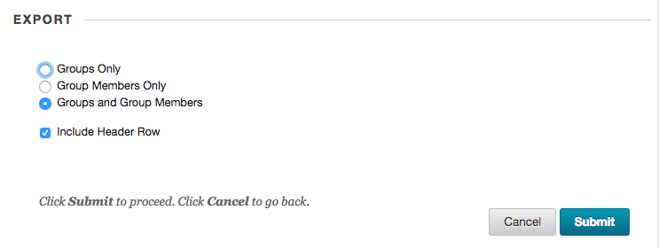
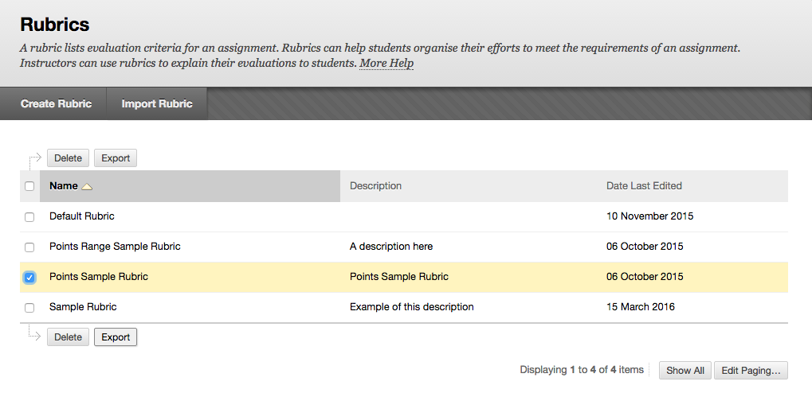
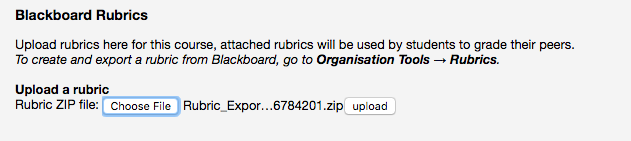
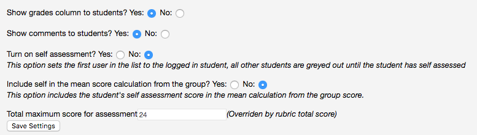

Instructors
Adding the LTI Link
Once the templates have been setup you will be supplied with the details for the LTI link as it appears in Blackboard Learn
LTI Link Settings
Once the link has been placed in your course, you can manage settings as an Instructor by clicking the link. To preview the tool, it is first necessary to keep your preview user and subsequently add your preview user to a group. Once in student preview, you will then see the group as a student.
Blackboard Learn
- LTI link URL
- Key
- Secret
- Customised Parameters

Adding a Description (Single Line Only)
Note that there is a bug in blackboard that does not properly encode multi-line descriptions, so keep your description short and on a single line.

Configuration
To configure the tool, access on the LTI link created earlier (ensure you are not in preview mode).
Activate peer assessment
This feature is primarily for developers and will be removed in future releases

Gradebook Syncronisation
The first time you use the tool a message will appear asking if you would like to automatically sync the gradebook. The gradebook is accessed in Blackboard Learn via the Grade Center. This will update the user list from the Gradebook every time you access the link. Select the appropriate option.

Manually Upload the Student Gradebook
If you choose 'No' for the above option, you will need to manually upload the student list.
To manually upload the student list, first download the student list from group export. Ensure you select the Groups and group members and Include header row options. The file will be emailed to you. You will need to download it from the link in the email.

In the instructor view, uploadt the csv file using the form.

Add a Rubric
Export a rubric from Blackboard Learn that you would like the students to use to assess each other.

Upload the rubric ZIP file into the peer review tool using the form: 
Select the rubric from the dropdown and Attach. You can use Preview to preview the Rubric.
Rubrics will not attach automatically, ensure you click Attach.

Configure Student View
There are several configuration options for the student view.
- Show grade column
- students can see the grade others have given them
- Show comments
- students can see the comments others have given them
- Turn on self assessment
- students assess their own performance first, they cannot assess others until they have assessed themselves
- When changing this setting you will need to resync the user groups (see Gradebook Syncronisation)
- Include self in mean score
- mean score includes the student's own score, for example if there are 5 in the group and the total score the group has given the student is 300 the final score will be 300/5 = 60 rather than 300/4 = 75
- Total maximum score for assessment
- used to calculate the percentage score, if you are not using a rubric you can set this here. The rubric total score will override this setting if a rubric is attached

Previewing as a Student
You can see the student view by adding your Blackboard preview user to a group and then syncronising the PRP with Blackboard.
View a general guide at blackboard.com on how to add users to groups.
- Ensure you Save your preview user by accessing the
 and then clicking the
and then clicking the  button.
button. - Exit preview mode.
- Access Users and Groups -> Groups.
-
Select Edit Group in the drop down:

-
Click Add Users and search for Username -> Contains -> [your username].
-
Your username will be: [your username] underscore preview user,
so the username
jb123would have a preview userjb123_previewuser
-
-
Add this user and ensure you now syncronise the groups with Blackboard using either Gradebook Syncronisation or Manually Upload the Student Gradebook
-
You can now use preview mode to access the LTI link created earlier and view the peer review group you added your previewuser to in step 4 to 6 earlier.